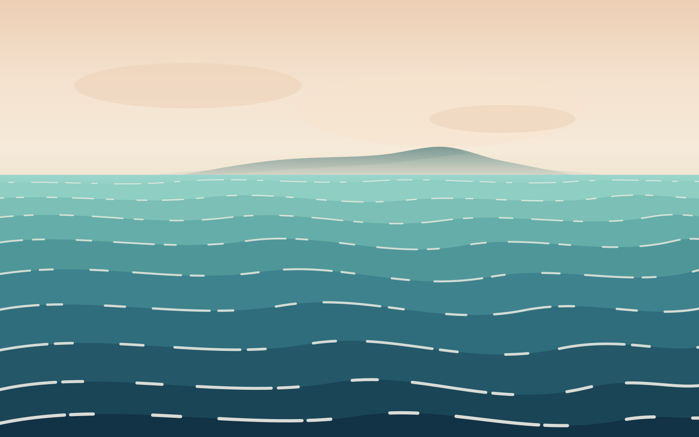

Produktdesign zwischen zwei Küsten.
Digitale Produkte, die sich so selbstverständlich anfühlen wie Wind, der von Levante auf Poniente dreht.
Product Designer

Digitale Produkte, die sich so selbstverständlich anfühlen wie Wind, der von Levante auf Poniente dreht.